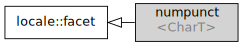

std::numpunct
来自cppreference.com
| 定义于头文件 <locale>
|
||
| template< class CharT > class numpunct; |
||
平面 std::numpunct 封装数值标点偏好。流 I/O 操作通过 std::num_get 和 std::num_put ，将用 std::numpunct 用于剖析数值输入，和格式化数值输出。
std::numpunct 所支持的数字拥有后述格式。此处 digit 表示 fmtflags 参数值所指定的基底集， thousands-sep 和 decimal-point 分别为 thousands_sep() 和 decimal_point() 函数的结果。整数值格式如下：
integer ::= [sign] units sign ::= plusminus plusminus ::= '+' | '-' units ::= digits [thousands-sep units] digits ::= digit [digits]
thousand-sep 之间的数位（ digits 的最大大小）由 grouping() 的结果指定。
浮点值格式如下：
floatval ::= [sign] units [decimal-point [digits]] [e [sign] digits] |
[sign] decimal-point digits [e [sign] digits]
e ::= 'e' | 'E'
继承图
标准库提供二个孤立（独立于本地环境）的特化：
| 定义于头文件
<locale> | |
| std::numpunct<char> | 提供 "C" 本地环境偏好的等价版本 |
| std::numpunct<wchar_t> | 提供 "C" 本地环境偏好的宽字符等价版本 |
另外， C++ 程序中构造的每个 locale 对象实现这些特化的其自身（本地环境限定）版本。
成员类型
| 成员类型 | 定义 |
char_type
|
charT
|
string_type
|
std::basic_string<charT> |
成员函数
| 构造新的 numpunct 平面 (公开成员函数) | |
| 析构 numpunct 平面 (受保护成员函数) | |
| | |
调用 do_decimal_point (公开成员函数) | |
调用 do_thousands_sep (公开成员函数) | |
调用 do_grouping (公开成员函数) | |
调用 do_truename 或 do_falsename (公开成员函数) | |
受保护成员函数
| 提供用作小数点的字符 (虚受保护成员函数) | |
| 提供用作千分隔符的字符 (虚受保护成员函数) | |
| [虚] |
提供一对千分隔符之间的位数 (虚受保护成员函数) |
| 提供用作布尔 true 和 false 名称的字符串 (虚受保护成员函数) |
成员对象
| static std::locale::id id |
locale 的 id (公开成员对象) |
示例
下列代码更改 true 和 false 的字符串表示
运行此代码
#include <iostream> #include <locale> struct french_bool : std::numpunct<char> { string_type do_truename() const { return "oui"; } string_type do_falsename() const { return "non"; } }; int main() { std::cout << "default locale: " << std::boolalpha << true << ", " << false << '\n'; std::cout.imbue(std::locale(std::cout.getloc(), new french_bool)); std::cout << "locale with modified numpunct: " << std::boolalpha << true << ", " << false << '\n'; }
输出：
default locale: true, false locale with modified numpunct: oui, non
参阅
| 为具名 locale 创建 numpunct 平面 (类模板) |